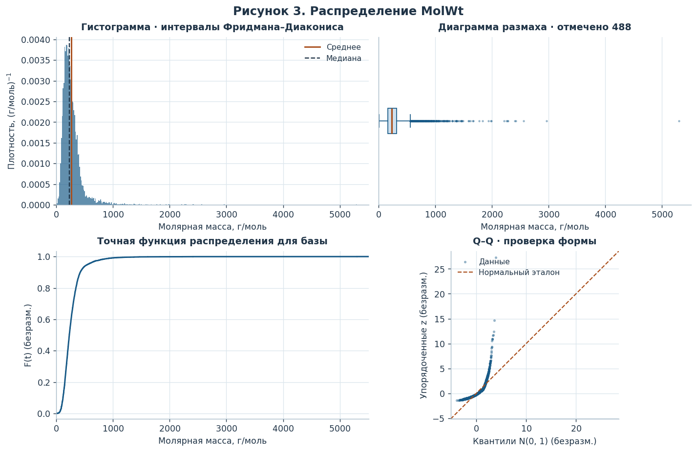
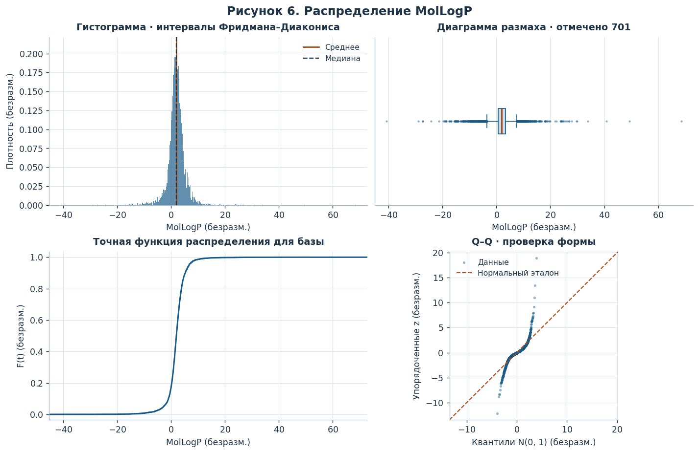
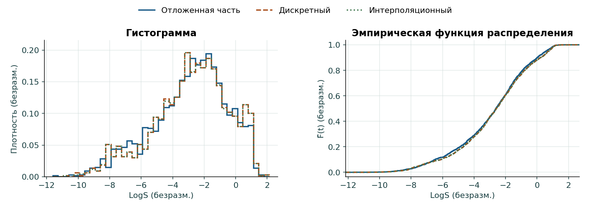

Растворимость в воде
LogS — десятичный логарифм численного значения растворимости в моль/л. Среднее −2,89 ниже медианы −2,62. Распределение вытянуто в сторону малорастворимых соединений.

Как растворимость связана с массой и липофильностью молекулы? Исследуем три свойства соединений из базы AqSolDB.
LogS — десятичный логарифм численного значения растворимости в моль/л. Среднее −2,89 ниже медианы −2,62. Распределение вытянуто в сторону малорастворимых соединений.
Средняя масса составляет 266,67 г/моль, медиана — 228,68 г/моль. Редкие тяжёлые молекулы образуют длинный правый хвост.

MolLogP оценивает распределение вещества между октанолом и водой. Среднее 1,98 близко к медиане 1,95, при этом у распределения выраженные хвосты.

Первый метод выбирает наблюдавшиеся значения LogS. Второй вычисляет промежуточные значения с помощью линейной интерполяции квантилей. Оба сравниваем на одной отложенной выборке.

| Метрика | Отложенная часть | Дискретный | Интерполяционный |
|---|---|---|---|
| Среднее | −2,9295 | −2,8259 | −2,8256 |
| Медиана | −2,6198 | −2,5937 | −2,5937 |
| Стандартное отклонение | 2,3681 | 2,3679 | 2,3666 |
| Квантиль 95% | 0,5585 | 0,7331 | 0,7314 |
| Расстояние D до отложенной части | — | 0,0255 | 0,0255 |
Максимальное расхождение функций распределения с отложенной выборкой составило 0,0255 у дискретного генератора и 0,0255 у интерполяционного.
Методы, автотесты и результаты